Zennの「LLM」のフィード
フィード
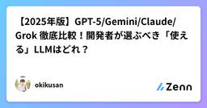
【2025年版】GPT-5/Gemini/Claude/Grok 徹底比較！開発者が選ぶべき「使える」LLMはどれ？API料金から性能まで完
Zennの「LLM」のフィード
はじめに：結局、どのLLMが「使える」のか？2025年8月、AI開発の現場は大きな転換点を迎えています。OpenAIがGPT-5をリリースし、GoogleのGemini 2.5 Pro、AnthropicのClaude Sonnet 4、xAIのGrok 4といった次世代モデルが出揃いました。しかし、選択肢が爆発的に増えた今、「結局、どのモデルが自分のプロジェクトに最適なんだ？」と多くの開発者が頭を悩ませています。コーディング、RAG、リアルタイム分析…目的ごとに最適なモデルは異なり、API料金も様々です。モデル選定を誤れば、開発効率が上がらないどころか、無駄なAPIコストを垂...
7時間前
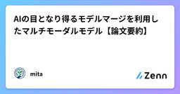
AIの目となり得るモデルマージを利用したマルチモーダルモデル【論文要約】
Zennの「LLM」のフィード
初めにこんにちは、AIエンジニアを目指しているmitaです！今回はVisCodex: Vision-Language–Code Models by Merging Architecturesという、マルチモーダルモデル×コード生成モデルを“モデルマージ”で統合し、視覚理解とコード生成の両立を図った研究を要約＆考察していきます。キャッチアップした内容を共有していくので、何かしらの形でお役に立てれば光栄です！https://arxiv.org/pdf/2508.09945v1 論文要約VisCodexは、VLMの言語バックボーンに、コード特化LLMのタスクベクトルを...
7時間前
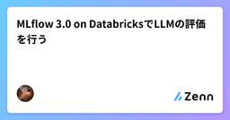
MLflow 3.0 on DatabricksでLLMの評価を行う
Zennの「LLM」のフィード
はじめに2025/6/12 に MLflow 3.0 がリリースされました。MLflow 3.0 では、GenAI の機能が強化され LLM（大規模言語モデル）の評価が容易になりました。私はこれまで OpenAI のモデルを評価する記事をいくつか書いてきました[1][2][3]。この記事では、MLflow 3.0 を使って Databricks 上で LLM の評価を行う方法を紹介します。 実行環境実行環境Azure DatabricksMLflow 3.2.017.1 (includes Apache Spark 4.0.0, Scala 2.13) ML本記事...
7時間前
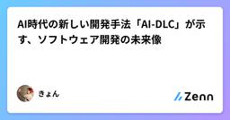
AI時代の新しい開発手法「AI-DLC」が示す、ソフトウェア開発の未来像
Zennの「LLM」のフィード
ソフトウェア開発の世界は今、大きな転換点を迎えている。大規模言語モデル（LLM）の登場により、コード生成やバグ検出といったタスクが劇的に効率化された一方で、従来のSDLCやアジャイル手法では、AIの真の潜在能力を活かしきれていないのが現状だ。そんな中、Amazon Web Servicesが提案する「AI-Driven Development Lifecycle（AI-DLC）」[1]は、AI時代に最適化された全く新しい開発手法として注目を集めている。本記事では、この革新的なアプローチについて、具体的な実装例を交えながら詳しく解説していく。 なぜ今、新しい開発手法が必要なのか現在...
8時間前
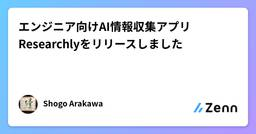
エンジニア向けAI情報収集アプリResearchlyをリリースしました
Zennの「LLM」のフィード
Researchlyというソフトウェアエンジニア向けのAI情報収集iOSアプリを開発しました！下記のApp Storeリンクからダウンロードできます（iOS18.5以上が対象）。https://apps.apple.com/jp/app/id6739998813?l=jphttps://x.com/adsholoko/status/1956515521102479800 はじめにResearchlyは、長らくエンジニアをしてきたなかで、自分が「もっとこうなればいいな」を詰め込みました。ソフトウェアエンジニアの日常における理想の情報収集を実現するために開発しています🍵自分は、バ...
10時間前
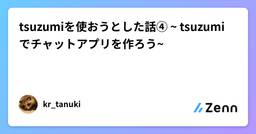
tsuzumiを使おうとした話④ ~ tsuzumiでチャットアプリを作ろう~
Zennの「LLM」のフィード
あらすじ今度新しいモデルを発表することが決まっているtsuzumiを使ってみようということで、１ではMaaSとしてtsuzumiを使うためのAzure設定をし、２では公式ドキュメントに沿ってアダプタチューニングのやり方を学び、３ではAPIを使うテストをしました。いよいよ今回はAPIを使ったチャットアプリをコーディングしてみます。 チャットアプリ実装今回はAzure上でMaaSとしてデプロイしたtsuzumiを使って簡単なチャットアプリを作りたいので、Streamlit と Azure AI Inference を組み合わせたものを作っていく。コードのフルバージョン...
11時間前
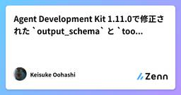
Agent Development Kit 1.11.0で修正された output_schema と tools の同時利用
Zennの「LLM」のフィード
こんにちは、サントリーこと大橋です。2025/08/15にAgent Development Kit(以降ADK) 1.11.0がリリースされました。https://github.com/google/adk-python/releases/tag/v1.11.0最近は毎週金曜日にリリースされており、計画的に開発が進められていることがうかがえます。今回のリリースで追加された主な機能は以下です。[Tools] Support adding prefix to tool names returned by toolset (ebd726f)[Eval] Expose print...
1日前
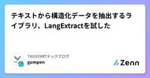
テキストから構造化データを抽出するライブラリ、LangExtractを試した
Zennの「LLM」のフィード
概要https://github.com/google/langextracthttps://langextract.com/jaLangExtract は、LLMを使って非構造テキストから構造化データを抽出する Python ライブラリです。抽出結果には、元テキストの位置が付与され、それをブラウザでインタラクティブに確認することができます。2025年8月15日現在、約11kスターを獲得しています。 NER(Named Entity Recognition)についてLangExtractはテキスト中から特定の種類の情報を自動的に抽出する機能を提供します。こういった...
1日前
「おっす」で始める！Goの公式MCP SDK × LangChainGoでエージェント実装
Zennの「LLM」のフィード
始めにLLMやAIの開発はほとんどPythonで行われているかと思いますが、Goのエコシステムにも素敵なフレームワークがあるので、サクッと使い方を紹介したいと思います。チャットボットなら200行以下で作れちゃいます！ 必要な環境Gohttps://github.com/tmc/langchaingo (v0.1.14以降、現時点未リリース)https://github.com/modelcontextprotocol/go-sdk (v0.2.0)LLMのAPIアクセスこの記事では Bedrock と Claude Sonnet 4 を利用Cline ...
1日前
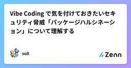
Vibe Coding で気を付けておきたいセキュリティ脅威「パッケージハルシネーション」について理解する
Zennの「LLM」のフィード
はじめにAI支援コード生成の急速な普及に伴い、開発者の多数がAIツールを活用し、AI由来のコード割合が増加傾向にある現在、新たなセキュリティ脅威が浮上している。パッケージハルシネーションと呼ばれるこの現象は、LLMが存在しないパッケージ名を含むコードを生成することで、ソフトウェアサプライチェーン全体に影響を与える可能性がある。この問題を扱った研究がUSENIX Security 2025で発表されることを知り、セキュリティ業界でも注目度の高いトピックだと感じた。実際に論文を読んでみると、AI時代の新しい脅威として具体的な分析データと実用的な対策が示されており、現場のエンジニアにと...
1日前
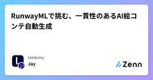
RunwayMLで挑む、一貫性のあるAI絵コンテ自動生成
Zennの「LLM」のフィード
1. はじめにこんにちは！Labdemyで長期インターンをしているガルシアです。インターン業務の一環で、「企画絵コンテの制作を自動化する」というテーマに挑戦する機会がありました。広告や映画制作の現場において、絵コンテは企画の骨子を視覚的に共有する重要なツールですが、その作成には多大な時間と専門スキルが必要です。このボトルネックをAIで解消できないか、というのが今回の出発点です。その具体的なアプローチとして、まず「シナリオテキストから、絵コンテを自動で作り出せるアプリケーション」開発に取り組みました。しかし、開発を進める中で、AIによる絵コンテ自動生成には大きな壁があることが分か...
1日前
AI Codingの社内向けガイドを作成しました | Resilire Tech Blog
Zennの「LLM」のフィード
はじめにレジリアの奥村@arashigaoka3 です。AI Codingは得意な人が活用すると爆発的に生産性が向上する一方で、ツールのアップデートが激しく、業務が忙しいとキャッチアップが難しかったり、やり方を間違えると逆に非効率になってしまう一面があります。Resilireでは、ほぼどのツールでも自由に使って良い一方で、具体的な知見の共有が進んでいない面もあったため、ガイドを作成しました。このブログでは、社内の雰囲気の共有も兼ねてそのガイドをほとんどそのまま共有させていただきます。以下が弊社のSCRM(Supply Chain Risk Management)リポジトリを...
2日前
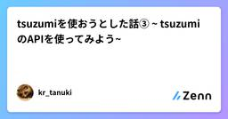
tsuzumiを使おうとした話③ ~ tsuzumiのAPIを使ってみよう~
Zennの「LLM」のフィード
あらすじ今度新しいモデルを発表することが決まっているtsuzumiを使ってみようということで、１ではMaaSとしてtsuzumiを使うためのAzure設定をし、２では公式ドキュメントに沿ってアダプタチューニングのやり方を学びましたが、今回はそこから外部連携したアプリを作るためにAPIを使ってみます。というのもちょっとした目標を立ててみたからです。 Azureでデプロイしたモデルでチャットを作りたい！Azure AI Fandryでデプロイしたtsuzumiのオリジナル版モデルをAPIで利用してチャットアプリケーションを作ってみたいです。成果としてもわかりやすいかな...
2日前
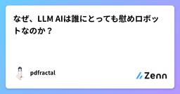
なぜ、LLM AIは誰にとっても慰めロボットなのか？
Zennの「LLM」のフィード
はじめに近年、対話型の大規模言語モデル(LLM AI)が広く普及し、その用途は情報検索や業務支援にとどまらず、日常的な雑談や相談相手としての利用にも広がっています。堀江貴文氏は、こうした利用形態を指して「低IQ層にとってLLM AIは慰めロボットのようなもの」と評しました。確かに、感情的な共感や承認をAIに求めるユーザー層が存在することは事実です。しかし、問題はそれだけではありません。実際には、高IQ層もまた別の形でAIを慰撫(いぶ)に使っており、むしろそのことが表立って語られない構造にこそ注目すべきです。本稿では、IQ水準別にLLM AIとの関係を整理し、なぜ知的水準に関わらず...
2日前
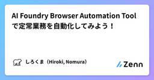
AI Foundry Browser Automation Tool で定常業務を自動化してみよう！
Zennの「LLM」のフィード
はじめにAzure AI Foundry に、Browser Automation Tool の機能が追加されました。(まだPreviewです)これにより、AIがブラウザ操作することができるため、定常業務の自動化エージェントが作成できそうと思ったので試してみます。Browser Automationの超概要です。自然言語でLLMがブラウザの操作可能Playwrightなので、「ダウンパース」手法により、Web ページの構造（DOM やアクセシビリティツリー）を解析。座標や画像認識に頼らず、要素を特定して操作できる。AzureのPlaywright Workspacesを...
2日前
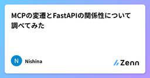
MCPの変遷とFastAPIの関係性について調べてみた
Zennの「LLM」のフィード
はじめにModel Context Protocol（MCP） は、生成AI（LLM）と外部ツール・データソースとの連携を標準化するために登場したオープンプロトコル。[1]。MCPはAIアプリケーションにとっての「USB-Cポート」や「言語モデルのためのKubernetes」とも呼ばれ、AIが世界と安全かつ効率的に接続するための共通レイヤーを提供するらしい[2]。本記事では、MCPの通信方式の変遷と、最新のStreamable HTTP方式の詳細、さらにFastAPIによる実装との関係性について、公式仕様[3]や複数の技術記事[4][5][6]を参照しながら見ていきます。...
2日前
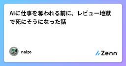
AIに仕事を奪われる前に、レビュー地獄で死にそうになった話
Zennの「LLM」のフィード
こんにちは。AIツールの課金額を月1万円に抑えることに成功し、妻との関係が改善したエンジニアです。前回の記事では、AIへの任せ方について書きました。今回はその続編です。https://zenn.dev/naizo01/articles/7b4bdf4b700dfe前回の記事を実践し、生産性が上がった結果、「レビュー地獄」という新たな敵」 が現れたのです。 月曜朝9時、地獄の始まり月曜日 朝9:00Claude: 「ログイン機能実装しました！（300行）」Cursor: 「DBスキーマ最適化しました！（15ファイル変更）」ChatGPT: 「リファクタリング完了です！（2...
2日前
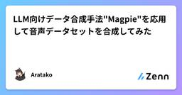
LLM向けデータ合成手法"Magpie"を応用して音声データセットを合成してみた
Zennの「LLM」のフィード
はじめにこの記事は、MagpieというLLM用のデータ合成手法をLLMベースのTTSモデルに応用し、合成音声データセットを作ってみたという記事です。 記事概要最近、LlasaやOrpheus-TTSなど、LLMをベースとした自己回帰によるTTSモデルが増えてきています。これらのモデルはLLMベースであるため、LLMに適用可能な合成データ作成手法をある程度そのまま利用することができます。今回、MagpieというLLM用のデータ合成手法をOrpheus-TTSに適用し、約12.5万件の合成音声データセットを作成・公開しました。データセットは以下で公開しています。https:/...
2日前
tsuzumiを使おうとした話② ~アダプタチューニングを試す~
Zennの「LLM」のフィード
前回のおさらい前回、tsuzumiを使ってみるべくAzureの準備で右往左往してしまいましたが、無事Azure AI Foundryでデプロイするところまでは進められました。https://zenn.dev/k_eclaire39/articles/7654058a9d23ba今回はその続きとして、上の記事でも紹介している公式のパワポ(tsuzumi on Azure MaaS ユーザーガイドv1.0) に沿ってチュートリアルを進めてみようと思います。スムーズにいけばよいのですが。※実はこれを書き始めた時点では実際の作業をしていません。↓公式資料はこちらhttps:/...
2日前
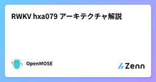
RWKV hxa079 アーキテクチャ解説
Zennの「LLM」のフィード
RWKV hxa079 アーキテクチャ解説こんにちは。お元気ですか？今日は、私がRWKV v7をベースに魔改造した RWKV hxa079 アーキテクチャ についてのメモです 背景RWKV hxa079 は、BlinkDL 氏が提案した RWKV v7 (x070) “Goose” アーキテクチャをベースに、以下の目的で改造したモデルです。Transformer Attention への変換を容易にするトレーニング・推論速度を向上させるRWKV v7 "Goose" は、Receptance / Key / Value のプロジェクション層を中心に構成されており...
2日前